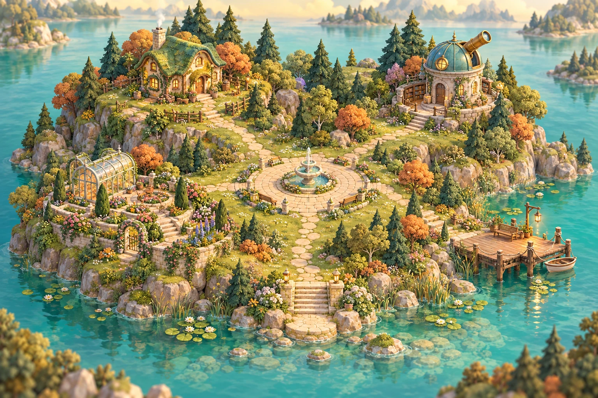

A LITTLE WORLD, AT YOUR PACE
歡迎返嚟，Dicky。
今日想去邊？喺小島慢慢行就得。

探吓伙伴，或者揀個地方行吓。
THE GARDEN REMEMBERS
每一個小步，都有留低。
POSTCARDS FROM YOUR ISLAND
探索小島，收好風景。
五個地方，五張明信片。每次發現新地方，伙伴會收到 3 金幣。
YOUR STORY SO FAR
小島紀念章
THE LITTLE PLAYGROUND
小遊戲廣場
揀個遊戲，陪小伙伴玩一陣。
找找小伙伴
揭開兩張，搵返相同嘅伙伴。
準備好，就揀一張。
THE STARLIGHT TRAIL
星光尋路
行一步，發現多一點。陪小伙伴行到星光盡頭。
A LITTLE JOURNEY, COMPLETE
行到邊都會記住 · 下次繼續
BY THE QUIET WATER
靜靜湖畔
今日可以慢慢嚟。
Dicky，今日點呀？
收工返到屋企，花一分鐘記低今日過成點。
今日一句
狀態
憑感覺揀，唔使諗太耐。
記錄日期
今日
心情 5
好差普通好好
緊張／焦慮 5
好平靜有啲好緊張
精神／體力 5
好攰普通好有力
身體同人
記低瞓咗幾耐，同埋今日有冇同人傾過偈。
主睡眠 —
至
今日瞓眠分咗幾段
同人嘅真實接觸
有冇郁過身
收工三省
諗返今日做到咩、邊一刻舒服啲，同埋聽日想試嘅一小步。
一件做到嘅事
一件舒服／開心嘅事
聽日一個細步
我嘅習慣
做咗就撳一下，睇吓最近邊啲習慣做得多。
ADOPT
領養你嘅小伙伴
揀一隻小伙伴，幫佢改個名。之後可以一齊住、散步、影相同玩遊戲。
顏色
改個名
傾偈
同小伙伴講句嘢，佢會用準備好嘅小短句回應你。
屋企成員
同你一齊住嘅寵物。撳「照顧佢」就可以轉去照顧另一隻。
寶物盒
散步時拾返嚟嘅嘢。
相簿
撳一張睇大啲，可以下載。
商店
金幣靠照顧自己同照顧寵物賺返嚟。食物喺「餵食」度買。
金幣
傢俬
買咗會即刻擺入屋企。
飾物
買一次，隨時換。
ARCANA · 22 主牌 ＋ 4 張隱藏牌
收工抽卡
寫低今晚想講嘅說話，手帳會按內容揀牌，陪你睇返今日。抽過嘅牌同日記，都可以喺牌庫同書櫃搵返。
今晚想講啲咩？
0 字
寫低今晚嘅說話，然後撳「洗牌抽卡」。
圖鑑
抽到 1 次「初見」；3 次「熟悉」，解鎖牌背後嘅故事；7 次「知己」，牌框變酒紅色。隱藏牌要喺特定日子先會出現。
書櫃
每晚一本，書脊顏色跟住嗰晚嘅牌。撳一本打開。
STUCK · 20 MIN
卡住急救
卡住咗、個腦好亂嗰陣，可以跟住呢四步，慢慢搵返下一步。
停一停：生理嘆氣
用鼻吸一啖，再補吸一細啖，然後用口慢慢呼晒。大約一分鐘，令身體由警報模式慢返落嚟。
準備
每輪 9 秒，做 6 輪
講出個念頭
唔使同個念頭拗。只係將佢叫出嚟：「我留意到我有個念頭話……」
我留意到我有個念頭話：
寫低之後，再讀一次。佢係一個念頭，唔係一個事實。佢可以喺度，你照樣行下一步。
「破山中賊易，破心中賊難。」王陽明。打山上嘅賊易，打心入面嘅賊難；「我搞唔掂」就係嗰隻心中賊。
拆到最細
卡住通常係因為下一步太大。拆到兩分鐘做得到、細到有啲無聊為止。
下一步最細嘅動作係：
「學好呢樣嘢」太大，改做「睇一條 5 分鐘片」。「搞掂份表」太大，改做「填第一格」。
「天下難事，必作於易；天下大事，必作於細。」老子《道德經》。二千幾年前已經教你拆細。
自己試 15 分鐘
先試嗰一小步。15 分鐘後，再決定繼續做，定搵人一齊諗。
15:00
你頂住咗唔舒服，自己試咗。呢個本身就係一條證據。
可以繼續做多 15 分鐘，或者帶住試過嘅方法去問人：「我試咗 A 同 B，仲卡喺 C，可以幫我睇吓嗎？」
「敏而好學，不恥下問。」《論語》。孔子都讚肯問人嘅人。試完先問，係最好嘅問法。
EVIDENCE
證據簿
收好你做到過嘅事，低落嗰陣可以翻返嚟睇。打卡寫低嘅「做到」亦會放入呢度。
「騏驥一躍，不能十步；駑馬十駕，功在不舍。」荀子。好馬跳一下都唔夠十步，普通馬拉十日車，靠嘅係唔停。
加一條
細到「今日準時出門」都算。
低落時抽一條
隨機抽一條你自己寫落嘅事實。
全部證據
標住「起步證據」嗰幾條係根據你之前講過嘅經歷寫嘅，唔啱可以刪。
APPROACH LADDER · 0–10
細步階梯
逃避會令你即刻舒服，但會令「我唔得」嘅感覺越嚟越大。由驚 3 至 5 分嗰級開始行。做完記低「之前估幾驚」同「實際幾驚」，通常實際冇估咁差，個腦就係咁樣慢慢學識唔使逃。
「不積跬步，無以至千里。」荀子《勸學》。跬步即係半步。
開一條新階梯
古今智慧・東西合璧
古今智慧
孔子、老子、荀子、莊子、王陽明、蘇東坡、曾國藩，加埋古羅馬嘅斯多葛哲學家同廣東俗語。每句都有白話解釋，同埋點樣用落你自己身上。撳「收藏」就會變成你嘅座右銘。
隨手抽一句
按心情揀
而家最似邊種感覺？
人物
佢哋都唔係一開始就叻
史書入面好多犀利人物，都經歷過考唔到、被人睇唔起、流落異鄉。每個故事後面都寫咗同你嘅關係。
東西方其實講緊同一樣嘢
現代心理學嘅方法，好多古人早就用緊。
我嘅座右銘
你收藏咗嘅句子。低潮應急卡同週回顧摘要都會用到。
WEEKLY · 星期日
週回顧
建議星期日休息日做，十分鐘以內。睇趨勢，唔睇單日。
心情・焦慮・精神
0 至 10 分
心情焦慮精神
主睡眠時數
虛線係你嘅目標時數
一覺瞓晒兩段三段或以上
好嘢熱度圖
最近 16 個星期，每格係一日。顏色越深，嗰日做咗越多好嘢（打卡、習慣、抽卡、證據）。其他日子只係留白。
少多
兩週一次：PHQ-4
國際通用嘅四題篩查，用嚟睇趨勢，唔係診斷。
每週三省
呢個星期做到咩
學到／留意到咩
下星期一個細步
同 Claude 一齊跟進
複製最近 7 日嘅摘要，貼去你同 Claude 嘅對話，再一齊諗下一步。
LOW-TIDE CARD
低潮應急卡
狀態好嗰陣預先寫好，低潮嗰陣就唔使諗，由上而下照住做。改完記得撳儲存。
① 我嘅警號
出現呢啲，代表要開始照顧自己。
② 我自己做得到嘅嘢
唔使靠人，會令我好少少。
③ 可以去嘅地方
有人喺附近，但唔使同人傾。
④ 我可以搵嘅人
唔止一個，分散啲，唔好將所有希望放喺一個人身上。
⑤ 令環境安全啲
低潮嗰陣，將會令自己更差嘅嘢放遠啲。
⑥ 令我想繼續行落去嘅嘢
想學嘅、想去嘅、想見嘅。
低潮時讀嘅句子
喺「古今智慧」收藏嘅句子會出現喺度。未收藏嘅話，先放幾句起步。
⑦ 專業支援（全部免費）
唔使等到好嚴重先可以搵。撐得好辛苦，就已經夠資格。
YOUR ISLAND GUIDE
使用指南・設定
想記低今日、玩一陣，定整理最近嘅生活？可以由下面揀個起點。
喺小島可以做啲咩
揀今日用得着嘅一兩樣就得。
記低今日用「今日打卡」記低心情、睡眠，同一件做到嘅小事。想寫多幾句，可以去「收工抽卡」。
玩一陣去小遊戲廣場，陪伙伴搵星光、推箱解謎，或者試吓翻牌配對。
同伙伴過日子探吓佢、帶佢出街、影張相。賺到嘅金幣可以買傢俬同飾物。
收好小進步「證據簿」放你做到過嘅事；「細步階梯」幫你將想試嘅事拆細，一步一步記低。
卡住嗰陣打開「卡住急救」，先停一停，再揀一件細到可以開始嘅事。
睇返最近點樣「週回顧」放埋心情、睡眠同習慣記錄，方便你睇返最近有咩變化。
預備低潮時用嘅卡喺「低潮應急卡」寫低可以做嘅事、可以去嘅地方，同可以搵嘅人。
搵句想記住嘅說話「古今智慧」有句子同小故事，睇啱可以收藏，之後喺應急卡度搵返。
可以點開始
每日收工返屋企、瞓之前打卡，一分鐘。
卡住時開「卡住急救」，跟四步行。
星期日做週回顧，複製摘要貼畀 Claude。
每兩星期做一次 PHQ-4。
設定
想幾點瞓、幾點起身
至
右下角細寵物
外觀
Google 同步
登入 Google，就可以喺另一部手機或電腦繼續用。同一個帳戶會見到同一份手帳。
正在查看有冇新記錄…
私隱同備份
未登入時，記錄只留喺呢個瀏覽器。登入後亦會存到雲端，服務管理者可能有權查看記錄。你可以選擇唔登入，亦可以隨時下載一份備份。
呢本手帳係自我照顧工具，唔能夠代替醫生或者心理治療師嘅評估同治療。